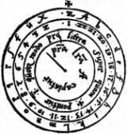

Beaujeu’den sonra, Tarikat varlığını bir an bile ara vermeksizin sürdürdü. Aumont’dan günümüze dek, Tarikat’ın kesintisiz bir dizi Büyük Üstad’ını biliyoruz. Bugün Tarikat’ı yöneten, onun yüce görevlerini yürüten gerçek Büyük Üstad’ın ve gerçek Üstler’in adları ve oturdukları yer bir giz, yalnızca gerçek aydınlanmışlarca bilinen erişilmez bir giz olarak kalmışsa, bunun nedeni, Tarikat’ın saatinin henüz gelmemesi, vaktin henüz dolmamasıdır...
(1760 tarihli el yazması. G. A. Schiffmann, Die Entstehung der Rittergrade in der Freimauerei um die Mitte des XVIlIJahrhunderts, Leipzig, Zechel, 1882, s.178-190)
Plan’la ilk uzaktan tanışmamız böyle olmuştu. O gün başka bir yerde olabilirdim. O gün Belbo’nun bürosunda olmasaydım, şimdi... kimbilir, belki de Semerkant’ta susam satıyor, Braille alfabesiyle yayımlanan bir dizinin editörlüğünü yapıyor, Franz Joseph’in ülkesinde İlk Ulusal Banka’yı yönetiyor olurdum. Öncül yanlışsa koşullu önerme her zaman doğrudur. Ama o gün oradaydım. Bu yüzden de şimdi neredeysem oradayım.
Albay, tiyatroya yaraşır bir el devinimiyle, sayfayı bize gösterdi. Hâlâ bende, kâğıtlarımın arasında duruyor. Plastik bir dosya içinde, şimdi biraz daha sararmış, yıpranmış. O yıllarda kullanılan termik kâğıda yazılmış. Aslında iki metin vardı. Sıkça yazılmış birinci metin sayfanın yansını kaplıyordu; ikinci metin dize parçalarına ayrılmıştı.
Birinci metin, bir çeşit şeytancı bir yakarı, Semitik bir dilin parodisiydi:
Kuabris Defrabax Rexulon Ukkazaal Ukzaab Urpaefel Taculbain Habrak Hacoruin Maquafel Tebrain Hmcatuin Rokasor Himesor Argaabıl Kaquaan Docrabajc Reisaz Reisabrax Decaiauan Oiquaquü Zaitabor Qaxaop Dugraq Xaelobran Disaeda Magisuan Raitak Huidal Uscolda Arabaom Zipreus Mecrim Cosrnae Duquifas Rocarbis.
“Pek açık seçik değil,” dedi Belbo.
“Hayır, değil,” diye onayladı Albay kurnaz kurnaz. “Bir anlam çıkarabilmek için bütün ömrümü verebilirdim, günün birinde, neredeyse bir rastlantı sonucu, bir kitap sergisinde Trithemius hakkında bir kitapta onun şifreli mesajlarından birine gözüm ilişmeseydi: ‘Pamersiel Oshurmy Delmuson Thafloyn...’ Bir ipucu bulmuştum; sonuna dek izledim onu. Trithemius hakkında bir şey bilmiyordum, ama Paris’te, 1606’da Frankfurt’ta basılmış, Steganographia, hoc est ars per occultam scripturam animi sui voluntatem absentibus aperiendi certa’nın bir nüshasını buldum. Uzaktaki insanlara gizli yazıyla içini açma sanatı. Bu Trithemius büyüleyici bir adam. On beşinci yüzyılın sonlarıyla on altıncı yüzyılın başlarında yaşamış, Spannheim’lı Benedikten papazı, İbranca, Kaidece, Tatarca gibi Doğu dillerini bilen, tanrıbilimciler, kabalacılar, simyacılarla, kuşkusuz Nettesheim’lı büyük Cornelius Agrippa’yla, belki de Paracelsus’la bağlantı kurmuş bir bilgin... Trithemius gizli yazılarla ilgili açıklamalarını, büyü perdesi ardında gizliyor; Örneğin, şu gördükleriniz gibi şifreli mesajlar göndermenizi Öğütlüyor. Sonra mesajı alan kişi, Pamersiel, Padiel, Dorothiel vb. melekleri çağıracak, bunlar onun gerçek mesajı anlamasına yardım edecekler. Ama verdiği örneklerin çoğu askeri mesajlar. Palatin kontu ile Bavyera Dükü Filip’e adadığı kitap, ilk ciddi şifreyazı örneklerinden birini oluşturur.
“Özür dilerim,” dedim, “doğru anladımsa, Trithemius, elimizdeki metnin yazılışından en az yüz yıl sonra yaşamış...”
“Trithemius, felsefe, yıldızbilim, Pitagoras matematiğiyle uğraşan bir Kelt derneğine bağlıydı. Aradaki bağı görüyor musunuz? Tapınakçılar, antik Kelt bilgisinden de esinlenen erginlemeci bir tarikattır; geniş çapta kanıtlandı bu. Bir biçimde, Trithemius, Tapınakçılar’ın kullandıkları şifrebilimsel dizgeleri öğrenmiş.”
“Etkileyici,” dedi Belbo. “Peki, gizli mesajın çevriyazısı ne diyor?”
“Acele etmeyin, beyler. Trithemius belli başlı kırk, ikincil önemde de on şifre dizgesi ortaya koyuyor. Şansım varmış, ya da Tapınakçılar, şifrelerini hiç kimsenin çözemeyeceğinden emin oldukları için, pek de kafa yormamışlar. Hemen kırk şifre dizgesinin ilkini denedim; metinde yalnızca sözcüklerin başharflerinin hesaba katıldığını varsaydım.”
Belbo sayfayı görmek istedi; ona bir göz attı: “Ama, öyle de olsa, saçma bir şey çıkıyor ortaya: kdruuuth...”
“Doğal bir şey bu,” dedi Albay, sözde alçakgönüllülükle. “Tapınakçılar kafa patlatmamışlardı, ama pek de tembel değildiler. Bu ilk dizinin kendisi de başka bir şifreli mesaj. On şifre dizgesinin ikinci dizisinden bir şey çıkarabilir miyim, diye düşündüm. Bakınız, bu ikinci dizi için Trithemius bazı çemberler kullanıyordu, ilk şifre dizgesinin çemberi bu...”

Dosyasından başka bir fotokopi çıkardı, sandalyesini masaya yaklaştırdı, bize dikkat etmemizi söyleyerek, kapalı dolmakaleminin ucuyla harflere dokundu.
“Bu, en basit dizge. Yalnızca dış çemberi düşünün. Mesajın her harfinin yerine, ondan önce gelen harfi koyuyorsunuz. A yerine Z, B yerine A yazıyorsunuz, böylece gidiyor. Bir gizli ajan için çocuk oyuncağı bu, bugün, ama o zamanlar büyücülük sayılıyordu. Doğal olarak, şifreyi çözmek için bunun tersini yapıyorsunuz; şifreli mesajın her harfinin yerine, ondan sonra gelen harfi koyuyorsunuz. Ben denedim; şansım varmış, ilk denemede başardım. İşte çözüm.” Okudu: “Les XXXVI inuisihles separez en six bandes; altı gruba ayrılmış otuz altı görünmez.”
“Peki ne demek bu?”
“ilk bakışta hiçbir şey. Kuttörensel nedenlerden ötürü gizli dilde yazılmış, bir grubun oluşturulmasıyla ilgili bir çeşit başlık. Tapınakçılar’ımız, mesajlarını, içine girilmez gizli bir yere kapattıklarından emin oldukları için, on dördüncü yüzyıl Fransızcasını kullanmakta sakınca görmemişler. Şimdi ikinci metne bakalım:
a la...Saint Jean
36 p charrete de fein
6...entiers avec saiel
p...les blancs mantiax r...s...chevaliers de Prv,ins pour la...j. nc.
6 foiz 6 en 6 places
chascune foiz 20 a...120 a...
iceste est l’ordonation
al donjon li premiers
it li secunz joste qui...pans
it al refuge
it a Nostre Dame de d’altre part de l’iau
it a l’ostel des popelicans
it a la pierre
3 foiz 6 avant la feste... la Grant Pute.
“Şifresi çözülmüş mesaj bu mu?” diye sordu Belbo, hem düş kırıklığına uğramış, hem eğlenmiş.
“Ingolf’un yazdığı metinde, noktaların okunamayan sözcükleri gösterdiği açık. Belki de parşömen yer yer bozulmuştu... İşte, benim son yazdığım; izin verirseniz, açık seçik, çürütülmez diye niteleyeceğim varsayımlara dayanarak, metni -dedikleri gibi- eski görkemli durumuna getirdim.”
Bir büyücü devinimiyle fotokopiyi çevirdi, büyük harflerle yazılmış notlarını gösterdi bize.
ERMİŞ YUHANNA (GECESİ)
SAMAN ARABASINDAN 36 (YIL) S(ONRA)
6 MÜHÜRLÜ (MESAJ)
BEYAZ PELERİNLİ (ŞÖVALYELER) [TAPINAKÇILAR]
Y(ENİDEN İNANÇLARINA) DÖNEN PROVINS ŞÖVALYELERİ
(ÖC) ALMAK İ(ÇİN)
6 YERDE 6 KEZ HER KEZ 20 Y(ILDAN) 120 Y(IL EDER)
PLAN ŞU:
BİRİNCİLER KALEYE GİTSİNLER
SONRA İKİNCİLER EKMEK (YİYEN)LERLE BULUŞSUNLAR
SONRA SIĞINAĞA
SONRA IRMAĞIN ÖTE YAKASINDAKİ MERYEM ANAYA
SONRA POPLİKANLARIN BARINAĞINA
SONRA TAŞA
3 KEZ 6 [666] BÜYÜK FAHİŞE YORTUSUNDAN ÖNCE.
“Karanlıkta yol bulmaktan da beter,” dedi Belbo.
“Kuşkusuz yorumlanması gerekiyor. Ama Ingolf kesinlikle başarmıştı bunu; benim başardığım gibi. Tarikatın tarihini bilen birisi için, göründüğü kadar çapraşık değil.”
Bir sessizlik. Bir bardak su istedi. Sonra metni, baştan sona, sözcük sözcük gösterdi bize.
“Bakın şimdi: Ermiş Yuhanna gecesi, saman arabasından otuz altı yıl sonra. Tarikatı ayakta tutmakla görevlendirilmiş Tapınakçılar yakalanmamak için kaçıyorlar; 1Eylülü’nde, bir saman arabasıyla. O zamanlar, yıl Paskalya’dan Paskalya’ya hesaplanırmış. Demek ki, 1307 yılı bizim hesabımıza göre 1308 Paskalya’sında sona erer. 1307 yılının sonundan (ki bu bizim 1308 yılı Paskalya’mızdır) başlayarak otuz altı yıl sayın; böylece 1344 Paskalya’sına varırız. 1308 Paskalya’sından 36 yıl sonra bizim 1344 Paskalya’mıza gelmiş oluruz. Mesaj, değerli bir kutu içinde mahzene konmuş; bir mühür, gizli tarikatın kuruluşundan sonra, Ermiş Yuhanna gecesi, yani 23 Haziran 1344’te orada yer alan bir olaya tanıklık eden bir çeşit noter belgesi olarak.”
“Neden 1344?”
“Kanımca, 1307’den 1344’e dek, gizli tarikat yeniden örgütleniyor, parşömende duyurulan taslak için hazırlanıyor. Suların durulmasını, beş ya da altı ülkenin Tapınakçılar’ı arasındaki bağın yeniden kurulmasını beklemeleri gerekiyordu. Tapınakçılar’ın otuz altı yıl -otuz beş ya da otuz yedi yıl değil- beklemelerinin nedeni, otuz altı sayısının, mesajın da doğruladığı gibi, onlar gibi gizemsel bir değeri olmasıydı. Otuz altı sayısının kendi içinde toplamı dokuz eder. Bu sayının derin anlamını size anımsatmama gerek yok.”
“Girebilir miyim?” Provins’li bir Tapınakçı gibi, yumuşak adımlarla omuz başımızda beliren Diotallevi’nin sesiydi bu.
“Tam sana göre,” dedi Belbo. Çarçabuk tanıştırdı onu. Albay pek de rahatsız olmuşa benzemiyordu; tersine, dikkatli dinleyicilerinin sayısının artmasından hoşnut olduğu izlenimini veriyordu. Açıklamayı sürdürdü; Diotallevi’nin bu sayısal incelikler karşısında ağzı sulanıyordu. Katıksız Gematria.
“Mühürlere gelelim; bir mühürle mühürlenmiş altı şey. Ingolf bir kutu buluyor; bir mühürle kapatıldığı apaçık. Kimin için mühürlenmişti bu kutu? Beyaz Pelerinliler, yani Tapınakçılar için. Mesajda bir r, silinmiş birkaç harf, sonra bir s görüyoruz. Ben, ‘relapsi’ diye okuyorum bunu. Niçin? Çünkü hepimiz biliyoruz ki, ‘relapsi’, itiraflarını geri alan sanıklardı. Tapınakçılar’ın davasında önemli bir rol oynadılar. Provins’li Tapınakçılar, ‘relapsi’ kimliğini onurla taşıdılar. Kendilerini o gülünç davadan ayrı tutuyorlardı onlar. Demek ki, Provins Şövalyelerinden, ‘relapsi’den söz ediliyor. Neye hazırdı bunlar? Elimizdeki birkaç harf, ‘vainjance’, ‘öc’ sözcüğünü düşündürüyor.”
“Ne öcü?”
“Beyler! Tapınakçılar’in tüm gizemi, davadan başlayarak, Jacques de Molay’ın öcünü alma tasarısında odaklaşır. Ben, Mason törenlerine pek önem vermem, ama Tapınak Şövalyeleri’nin kentsoylu bir karikatürü olan bu Mason törenleri ne denli yozlaşmış olursa olsun, Tapınakçı törenlerinin bir yansımasıdır, iskoç riti masonluğunun rütbelerinden biri, Kadoş Şövalyesi’dir. İbranca öç şövalyesi anlamına gelir bu.”
“Güzel. Tapınakçılar öç almaya hazırlanıyorlar. Peki, sonra?”
“Bu öç tasarısı, ne kadar zaman alacaktır? Şifreli mesaj, dilsel mesajı anlamamıza yardımcı oluyor. Altı şövalyenin, altı kez altı yerde bulunmasından söz ediliyor: altı gruba ayrılmış otuz altı kişi. Sonra şöyle deniyor: ‘Her kez yirmi’. Burada bir harf var ki, açık seçik değil, ama Ingolf’un çevriyazısında y’ye benziyor. ‘Her seferinde yirmi yıl’ sonucunu çıkardım bundan; altı kere yirmi, yüz yirmi yıl. Mesajın geri kalan bölümüne bakarsak, altı yerin, ya da yerine getirilmesi gereken altı görevin bir listesini görürüz. Bir ‘ordonasyon’dan, bir plandan, bir tasarıdan, izlenmesi gereken bir yöntemden söz ediliyor. Birincilerin, bir ‘donjon’a, yani bir kaleye gitmeleri gerektiği söyleniyor; ikincilerin bir başka yere, böylece altıncılara dek gidiyor. Demek ki, belge, henüz mührü açılmamış, çeşitli yerlere dağılmış, altı belge daha olduğunu söylüyor bize. Mühürlerin birbiri ardısıra, yüz yirmi yıl aralıklarla açılması gerektiği açık görünüyor bana...”
“Peki, ama neden her seferinde yirmi yıl?” diye sordu Diotallevi.
“Bu öç şövalyelerinin, her yüz yirmi yılda bir, bir görevi yerine getirmeleri gerekiyor. Bir çeşit bayrak yarışı söz konusu. 1344 gecesinden sonra altı şövalyenin yola çıktıkları, her birinin planda öngörülen altı yerden birine gittiği açık. Ama ilk mührün koruyucusu kuşkusuz yüz yirmi yıl hayatta kalamaz. Her mührün koruyucusunun yirmi yıl görevde kalacağı, sonra komutayı bir ardıla devredeceği anlaşılıyor. Yirmi yıl akla yakın bir süre, her mühür için altı koruyucu, her biri için yirmi yıllık bir süre, böylece yüz yirminci yılda mührün koruyucusunun, diyelim bir buyruğu okuyabilmesini, sonra da onu ikinci mührün ilk koruyucusuna iletmesini güvence altına alıyorlar. Mesajda, çoğul kullanılmasının nedeni bu; birinciler şuraya, ikinciler oraya gitsinler... Her yer altı şövalye tarafından, yüz yirmi yıllık bir zaman diliminde, deyim yerindeyse, denetlenmiş oluyor. Hesaplayın, birinci yerden altıncı yere dek, beş kez el değiştiriliyor; bu da altı yüz yıl eder. 1344’e altı yüz eklersem 1944 eder. Son satır da bunu doğruluyor. Gün gibi açık.”
“Yani?”
“Son dizede şöyle deniyor: ‘Büyük Fahişe’nin yortusundan önce üç kez altı. Burada da sayısal bir oyun var; çünkü, 1944 sayısı kendi içinde toplandığında 18 eder. On sekiz, üç kere altıdır. Bu yeni hayranlık verici sayısal rastlantı, Tapınakçılar’ın aklına bir başka ince bilmece getiriyor. 1944, planın tamamlanacağı yıldır. Ne bakımdan? Kuşkusuz iki bin yılı bakımından! Tapınakçılar, iki bin yılının, onların Kudüs’ünün başlangıcını belirleyeceğini düşünüyorlar: bir yeryüzü Kudüs’ü. Anti-Kudüs. Sapkın olarak koğuşturulmamışlar mıydı? Kiliseye duydukları nefret yüzünden, kendilerini Deccal’la özdeşleştiriyorlar. Biliyorsunuz, gizlici gelenekte 666, Şeytan’ın sayısıdır. Altı yüz altmış altı yılı, Tapınakçılar’ın öcünün alınacağı yıldır; Anti-Kudüs ise, Yeni-Babil’dir. Bu nedenle de, 1944, Büyük Fahişe’nin, Vahiy’de sözü edilen Büyük Babil Orospusu’nun yengi kazanacağı yıl! 666’ya yapılan gönderme, bir kışkırtma, silahlı adamların bir meydan okuyuşudur. Bugün denebileceği gibi, dışlananların yücelmesidir. Güzel bir öykü, değil mi?”
Gözleri nemli, dudakları, bıyıkları nemli, bize baktı; bir yandan da elleriyle dosyasını okşuyordu.
“Pekâlâ,” dedi Belbo. “Bir planın zamanlaması özetleniyor burada. Ama hangi plan?”
“Çok soru soruyorsunuz. Bunu bilseydim, bir olta atma gereğini duymazdım. Ama bildiğim bir şey var. Bu geçen zaman içinde bir olay oldu, plan gerçekleştirilemedi; yoksa, izin verirseniz söyleyeyim, bunu bilirdik. Nedenini de anlayabiliyorum: 1kolay bir yıl değildi; Tapınakçılar her türlü iletişimi güçleştirecek bir dünya savaşının çıkacağını bilemezlerdi o zaman.”
“Araya girdiğim için özür dilerim,” dedi Diotallevi, “doğru anlıyorsam, ilk mühür açıldıktan sonra bu mühür bekçileri sülalesi sona ermiyor. Tarikatın tüm temsilcilerinin huzurunda son mührün açılışına dek sürüyor. Demek oluyor ki, her yüzyılda, daha doğrusu, her yüz yirmi yılda, belirlenen yerlerin her birinde altı, yani toplam otuz altı mühür koruyucusunun bulunması gerekiyor.”
“Tastamam,” dedi Ardenti.
“Altı yerin her birinde otuz altı şövalye, toplam 216 eder. Bu sayının kendi içinde toplamı 9’due. 6 yüzyıl olduğuna göre, 216’yı 6’yla çarpalım: 1296 ederiz. Bunun kendi içindeki toplamı 18 eder; yani üç kere altı, ya da 666. “Diotallevi, belki de evrensel tarihi aritmetik dökümünü yapmayı sürdürecekti, Belbo bir bakışta onu durdurmasaydı; çocukları pot kırdığı zaman annelerin yaptıkları gibi. Ama Albay, Diotallevi’nin aydınlanmış biri olduğunu anlamaya başlıyordu.
“Harika bir açıklama bu profesör! Biliyorsunuz dokuz, Kudüs’te Tapınak’ın çekirdeğini kuran ilk şövalyelerin sayısıdır!”
“Tetragarammaton’un belirttiği gibi, Tanrı’nın yüce adı” dedi Diotallevi “yetmiş iki harften oluşur, yedi artı 2 de dokuz eder. Ama izin verirseniz, bir şey daha söyleyeceğim. Kabala’nın benimsediği (ya da esinlendiği!) Pitagoras geleneğine göre, birden yediye kadar tek sayıların toplamı on altı, ikiden sekize kadar çift sayıların toplamı da yirmi eder. Yirmi artı on yedi ise otuz altı eder.”
“Aman Tanrım, profesör,” Albay titriyordu, “biliyordum, biliyordum. Beni yüreklendirdiniz. Gerçeğe daha yakınım şimdi.”
O zaman anlamamıştım, Diotallevi aritmetiği mi dine dönüştürmüştü, dini mi aritmetiğe? Belki ikisi de aynı şeydi; yüce bir gök katına erişmenin tadını çıkaran bir tanrıtanımaz vardı karşımda. Bir rulet tutkunu da olabilirdi (daha iyi olurdu bu), oysa inançsız bir haham sanıyordu kendini.
Ne olduğunu şimdi tam olarak anımsayamıyorum, ama Belbo, Piemonteli sağduyusuyla söze karışıp büyüyü bozdu. Albayın yorumlaması gereken üç dize daha kalmıştı, hepimiz merak ediyorduk. Saat akşamın altısı olmuştu bile. Altı, diye düşündüm, yani on sekiz.
“Pekâlâ” dedi Belbo. “Yüzyılda bir otuz altı şövalye adım adım Taş’ı ortaya çıkarmaya yaklaşıyorlar. Ama nedir bu Taş?”
“Hadi canım! Anlamayacak ne var? Graal söz konusu elbette.”